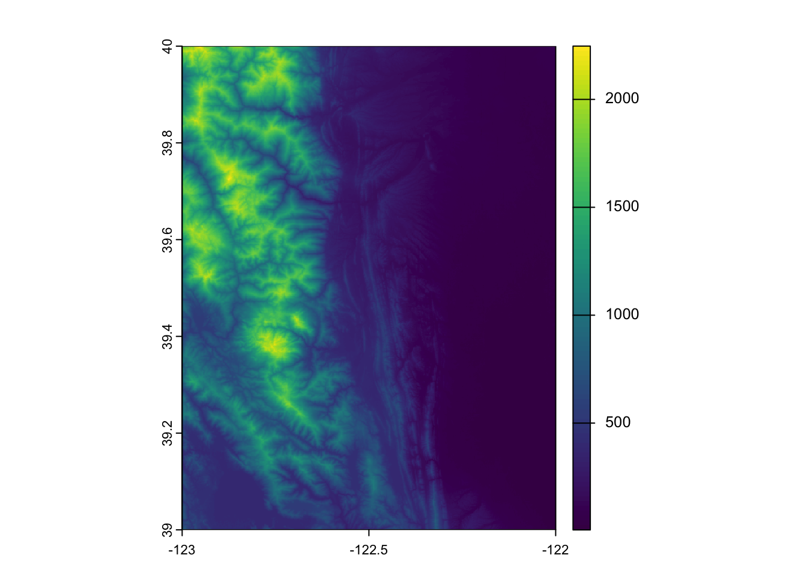

install.packages(c('dplyr', 'DT', 'rstac', 'devtools', 'terra'))How do I find data with NASA’s CMR-STAC API in R
This tutorial demonstrates how to interact with CMR-STAC in R.
Searching NASA Earthdata is powered the NASA Common Metadata Repository (CMR), which is a metadata system that catalogs NASA Earth Science data. The CMR allows users to search and discover data collections through various means, including Earthdata Search, an Application Programming Interface (API), and SpatioTemporal Asset Catalog (STAC).
This tutorial will teach you how to navigate and explore NASA’s SpatioTemporal Asset Catalog (STAC) using R, to find and learn about the datasets available through NASA’s different cloud archives. We’ll demonstrate by using it to search for ASTER Global DEM data available in the LP DAAC’s Cumulus cloud archive.
Topics Covered in this Tutorial
- Introduction to STAC and the CMR-STAC API
1a. What is STAC?
1b. Why STAC?
1c. What is the CMR-STAC API?
- Get started & searching with CMR-STAC
2a. CMR-STAC API
2b. STAC Collection
2c. STAC Item
2d. Assets - Visualize a STAC Item
Required packages
Required packages:
dplyr: manipulate data frames of stac search resultsDT: make returned information more readablerstac: interact with STAC catalogsdevtools: install development version of packagesterra: open DEM data once it has been discovered via STAC search
Run the cells below to install (or update) the necessary packages, and then load all of the required packages.
library(dplyr)
Attaching package: 'dplyr'The following objects are masked from 'package:stats':
filter, lagThe following objects are masked from 'package:base':
intersect, setdiff, setequal, unionlibrary(DT)
library(rstac)
library(terra)terra 1.8.60For listing the various STAC catalogs associated with NASA CMR, we’ll install the development version of the earthdatalogin package in the following cell. The development version contains functions that will be utilized in section 2a.
devtools::install_github("boettiger-lab/earthdatalogin")
library("earthdatalogin")1. Introduction to STAC and the CMR-STAC API
1a. What is STAC?
STAC is short for Spatiotemporal Asset Catalog, a series of specifications that standardize indexing and discovery of spatiotemporal assets (files containing information about the Earth across space and time).
There are four specifications that work both independently and together:
- STAC Catalog: a simple, flexible JSON file of links that provides a structure to organize and browse STAC Items.
- STAC Collection: an extension of the STAC Catalog with additional information such as the extents, license, keywords, providers, etc that describe STAC Items that fall within the Collection.
- STAC Item: the core atomic unit, representing a single spatiotemporal asset as a GeoJSON feature plus datetime and links.
- STAC API: a RESTful endpoint that enables search of STAC Items, specified in OpenAPI, following OGC’s WFS 3.
Source: stacspec.org
1b. Why STAC?
STAC is commonly used in cloud environments to catalog and index large datasets, making them more accessible for analysis and visualization. Many other organizations, such as theUS Geological Survey (USGS), Microsoft, and the European Space Agency, have adopted STAC as a standard for organizing and sharing geospatial data.
1c. What is the CMR-STAC API?
The Common Metadata Repository (CMR) is a metadata system that catalogs Earth Science data and associated metadata records. NASA’s CMR-STAC Application Programming Interface (API) is a translation API for STAC users who want to access and search through CMR’s vast metadata holdings using STAC keywords.
2. Get started with CMR-STAC
2a. CMR-STAC API
The CMR-STAC API contains endpoints that enable the querying of STAC items.
Here, we will use the function list_nasa_stacs, which connects to the CMR-STAC landing page (https://cmr.earthdata.nasa.gov/cloudstac/) for cloud datasets. The landing page contains all the available cloud data providers and their STAC endpoint.
cmr_cat_links <- earthdatalogin::list_nasa_stacs()
cmr_cat_links title href
5 SCIOPS https://cmr.earthdata.nasa.gov/cloudstac/SCIOPS
6 ASF https://cmr.earthdata.nasa.gov/cloudstac/ASF
7 GHRC_DAAC https://cmr.earthdata.nasa.gov/cloudstac/GHRC_DAAC
8 NSIDC_CPRD https://cmr.earthdata.nasa.gov/cloudstac/NSIDC_CPRD
9 CSDA https://cmr.earthdata.nasa.gov/cloudstac/CSDA
10 LAADS https://cmr.earthdata.nasa.gov/cloudstac/LAADS
11 GES_DISC https://cmr.earthdata.nasa.gov/cloudstac/GES_DISC
12 OB_CLOUD https://cmr.earthdata.nasa.gov/cloudstac/OB_CLOUD
13 LARC_CLOUD https://cmr.earthdata.nasa.gov/cloudstac/LARC_CLOUD
14 LPCLOUD https://cmr.earthdata.nasa.gov/cloudstac/LPCLOUD
15 POCLOUD https://cmr.earthdata.nasa.gov/cloudstac/POCLOUD
16 ORNL_CLOUD https://cmr.earthdata.nasa.gov/cloudstac/ORNL_CLOUD
17 ALL https://cmr.earthdata.nasa.gov/cloudstac/ALLThe data frame above shows all the data providers with their associated STAC catalog endpoints. You will notice above that the CMR-STAC API contains many different endpoints–not just from NASA LP DAAC, but also contains endpoints for other NASA ESDIS DAACs. Use the title field to identify the data provider you are interested in. The data product used in this tutorial is hosted in the LP DAAC Cumulus Cloud space (LPCLOUD).
Let’s get the associated endpoint for LPCLOUD.
provider <- 'LPCLOUD'
lpcloud_cat_link <- earthdatalogin::get_nasa_stac_url(provider)
lpcloud_cat_link[1] "https://cmr.earthdata.nasa.gov/cloudstac/LPCLOUD"2b. STAC Collection
STAC Collection is an extension of STAC Catalog containing additional information that describes the STAC Items in that Collection.
Let’s begin using the rstac package. rstac is a library that allows users to interact with STAC Catalogs and their associated data. Using the LPCLOUD link, we’ll use rstac to query the LPCLOUD catalog and retrieve the content describing associated collections. Important information such as data collection ID and the title are provided here.
lpcloud_collections <- stac(lpcloud_cat_link) |>
collections() |>
get_request()
lpcloud_collections###Collections
- collections (20 item(s)):
- HLSS30_2.0
- HLSL30_2.0
- SRTMGL1_003
- MCD43A3_061
- MYD09GQ_061
- MCD43A2_061
- MCD43A4_061
- MOD11A1_061
- MYD11A1_061
- MOD09GQ_061
- ... with 10 more collection(s).
- field(s): description, links, collectionscollection_info <- lapply(lpcloud_collections$collections, function(x) {
data.frame(id = x$id, title = x$title)
}) |>
dplyr::bind_rows()
collection_info id
1 HLSS30_2.0
2 HLSL30_2.0
3 SRTMGL1_003
4 MCD43A3_061
5 MYD09GQ_061
6 MCD43A2_061
7 MCD43A4_061
8 MOD11A1_061
9 MYD11A1_061
10 MOD09GQ_061
11 MOD11_L2_061
12 MOD14_061
13 MOD11B1_061
14 MYD14_061
15 MCD19A2_061
16 MCD19A1_061
17 MCD19A3D_061
18 MCD43A1_061
19 GEDI02_A_002
20 MOD21A1D_061
title
1 HLS Sentinel-2 Multi-spectral Instrument Surface Reflectance Daily Global 30m v2.0
2 HLS Landsat Operational Land Imager Surface Reflectance and TOA Brightness Daily Global 30m v2.0
3 NASA Shuttle Radar Topography Mission Global 1 arc second V003
4 MODIS/Terra+Aqua BRDF/Albedo Albedo Daily L3 Global - 500m V061
5 MODIS/Aqua Surface Reflectance Daily L2G Global 250m SIN Grid V061
6 MODIS/Terra+Aqua BRDF/Albedo Quality Daily L3 Global - 500m V061
7 MODIS/Terra+Aqua BRDF/Albedo Nadir BRDF-Adjusted Ref Daily L3 Global - 500m V061
8 MODIS/Terra Land Surface Temperature/Emissivity Daily L3 Global 1km SIN Grid V061
9 MODIS/Aqua Land Surface Temperature/Emissivity Daily L3 Global 1km SIN Grid V061
10 MODIS/Terra Surface Reflectance Daily L2G Global 250m SIN Grid V061
11 MODIS/Terra Land Surface Temperature/Emissivity 5-Min L2 Swath 1km V061
12 MODIS/Terra Thermal Anomalies/Fire 5-Min L2 Swath 1km V061
13 MODIS/Terra Land Surface Temperature/Emissivity Daily L3 Global 6km SIN Grid V061
14 MODIS/Aqua Thermal Anomalies/Fire 5-Min L2 Swath 1km V061
15 MODIS/Terra+Aqua Land Aerosol Optical Depth Daily L2G Global 1km SIN Grid V061
16 MODIS/Terra+Aqua Land Surface BRF Daily L2G Global 500m and 1km SIN Grid V061
17 MODIS/Terra+Aqua BRDF Model Parameters Daily L3 Global 1km SIN Grid V061
18 MODIS/Terra+Aqua BRDF/Albedo Model Parameters Daily L3 Global - 500m V061
19 GEDI L2A Elevation and Height Metrics Data Global Footprint Level V002
20 MODIS/Terra Land Surface Temperature/3-Band Emissivity Daily L3 Global 1km SIN Grid Day V061In CMR, the Collection ID is used to query by a specific product, so be sure to save the ID for a collection you are interested in. For instance, the Collection ID for ASTER Global Digital Elevation Model V003 is ASTGTM_003. Note that the “id” shortname is in the format: productshortname_VVV (where VVV = product version).
Here, we use the short name ASTGTM_003 to query the STAC Collection. If you are interested in querying a different LPCLOUD product, swap out the shortname to assign to the collection variable below.
Users can also define other parameters such as a temporal and spatial extent. Notice the limit parameter in the body object. This parameter allows us to adjust the number of records returned during a request (default = 10).
# define search parameters
collection <- 'ASTGTM_003'
datetime <- '2000-01-01T00:00:00Z/2001-01-31T23:59:59Z' #YYYY-MM-DDTHH:MM:SSZ/YYYY-MM-DDTHH:MM:SSZ
bbox <- c(
-122.0622682571411,
39.897234301806,
-122.04918980598451,
39.91309383703065
) # LL and UR Coordinates
# search
collection_search <- stac(
lpcloud_cat_link
) |>
stac_search(
limit = 100,
collections = collection,
bbox = bbox,
datetime = datetime
) |>
get_request()
collection_search###Items
- matched feature(s): 1
- features (1 item(s) / 0 not fetched):
- ASTGTMV003_N39W123
- assets:
003/ASTGTMV003_N39W123_dem, 003/ASTGTMV003_N39W123_num, browse, metadata, s3_003/ASTGTMV003_N39W123_dem, s3_003/ASTGTMV003_N39W123_num, thumbnail_0, thumbnail_1
- item's fields:
assets, bbox, collection, geometry, id, links, properties, stac_extensions, stac_version, typeWe can see that the output includes the number of items that fall within the search criteria, the assets, and fields.
2c. STAC Item
STAC Items represent data and metadata assets that are spatiotemporally coincident. Using our STAC Query, let’s get the first item from our STAC collection search in the above cell.
first_item <- collection_search$features[[1]]
first_item###Item
- id: ASTGTMV003_N39W123
- collection: ASTGTM_003
- bbox: xmin: -123.00014, ymin: 38.99986, xmax: -121.99986, ymax: 40.00014
- datetime: 2000-03-01T00:00:00.000Z
- assets:
browse, thumbnail_0, thumbnail_1, 003/ASTGTMV003_N39W123_dem, 003/ASTGTMV003_N39W123_num, s3_003/ASTGTMV003_N39W123_dem, s3_003/ASTGTMV003_N39W123_num, metadata
- item's fields:
assets, bbox, collection, geometry, id, links, properties, stac_extensions, stac_version, type2d. Assets
The STAC Item ID (CMR Granule ID) is the unique identifier assigned to each granule within a data collection. Within each STAC Item are assets, which include the downloadable and streamable URL to data files along with other asset objects. Below, the first Granule ID is used to get associated files, which can be found in the ‘href’ field.
item_assets <- first_item$assets
for (asset_name in names(item_assets)) {
cat("Asset:", asset_name, "\n")
cat("URL:", item_assets[[asset_name]]$href, "\n\n")
}Asset: browse
URL: https://data.lpdaac.earthdatacloud.nasa.gov/lp-prod-public/ASTGTM.003/ASTGTMV003_N39W123.1.jpg
Asset: thumbnail_0
URL: https://data.lpdaac.earthdatacloud.nasa.gov/lp-prod-public/ASTGTM.003/ASTGTMV003_N39W123.1.jpg
Asset: thumbnail_1
URL: s3://lp-prod-public/ASTGTM.003/ASTGTMV003_N39W123.1.jpg
Asset: 003/ASTGTMV003_N39W123_dem
URL: https://data.lpdaac.earthdatacloud.nasa.gov/lp-prod-protected/ASTGTM.003/ASTGTMV003_N39W123_dem.tif
Asset: 003/ASTGTMV003_N39W123_num
URL: https://data.lpdaac.earthdatacloud.nasa.gov/lp-prod-protected/ASTGTM.003/ASTGTMV003_N39W123_num.tif
Asset: s3_003/ASTGTMV003_N39W123_dem
URL: s3://lp-prod-protected/ASTGTM.003/ASTGTMV003_N39W123_dem.tif
Asset: s3_003/ASTGTMV003_N39W123_num
URL: s3://lp-prod-protected/ASTGTM.003/ASTGTMV003_N39W123_num.tif
Asset: metadata
URL: https://cmr.earthdata.nasa.gov/search/concepts/G1726750594-LPCLOUD.xml 3. Visualize a STAC Item
Now that we have successfully navigated the CMR-STAC catalog and found the asset URLs, we can download and visualize the ASTER DEM data using the terra package. The vsi = TRUE argument allows us to read the data directly from the cloud (i.e., stream it) without downloading it locally. We first need to authenticate using our Earthdata Login credentials using the edl_netrc() function. If you do not have an Earthdata Login, you can create one here.
# Authenticate with Earthdata Login
earthdatalogin::edl_netrc()
dem_url <- item_assets$`003/ASTGTMV003_N39W123_dem`$href
dem <- rast(dem_url, vsi = TRUE)
plot(dem)
Summary
In this tutorial, you learned how to navigate and explore the CMR-STAC Catalog using the CMR-STAC Search endpoint, which allows user to quickly search for STAC Items that meet their specific spatial, temporal, and data product requirements.
Additional Resources:
- Getting Started with Cloud-Native Harmonized Landsat Sentinel-2 (HLS) Data in R
- Accessing the MAAP STAC with R
Contact Information
This tutorial was updated on September 8, 2025 by the following NASA MAAP Team members: Sheyenne Kirkland1, Alex Mandel2, and Henry Rodman2
1 The University of Alabama-Huntsville (UAH)
2 Development Seed
The original material was written by Mahsa Jami and Aaron Friesz at LP DAAC